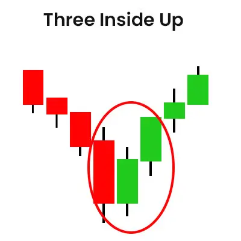
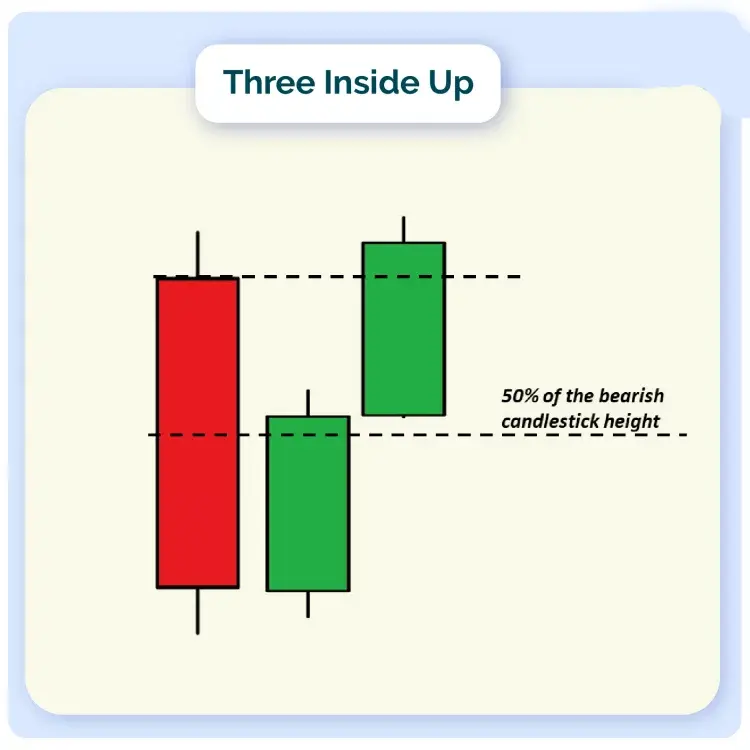

One big downward candle, another smaller upward candle that remains contained within the previous candle, and ultimately a third upward candle that closes above the second candle’s closing make up the three inside up candlestick patterns.
As a result, this pattern is classified as a bullish reversal. However, it may not always reflect any slight or big change because it is a short-term movement. By considering the general trendline, traders advocate adopting the three candle up/down patterns.
As a result, the three inside-up patterns look bullish, as shown below. This signifies that the asset’s downtrend has ended, and the price may now begin to rise.
| Formation |
Let us discuss how this candlestick pattern is formed-

1. The market must first be downtrend to see a three inside up candle pattern.
2. The first candle will be a down candle with a large body. A down candle, sometimes known as a black candle, implies a falling price.
3. The next candle is an up candle, indicating a break in the downward trend. This up candle’s body will be small enough to open and close without touching the first black candle’s body.
4. Finally, the third candle will be white and close over the second candle.
| What Traders Interpret from a Three Inside Up Pattern? |
On the first candle, the downtrend continues, with a massive sell-off creating new lows. This usually boosts seller confidence while deterring new buyers.
The first candle’s downtrend causes a significant sell-off while setting new lows. As a result, the second candle will open within the trading boundary of the previous candle.
Instead of continuing to the downside, it closes higher than the current open while remaining within the first candle’s borders.
This is usually a red flag for short-term sellers looking for a way out. The third candle completes the general bullish reversal. It traps any lingering short sellers while simultaneously enticing new long traders.